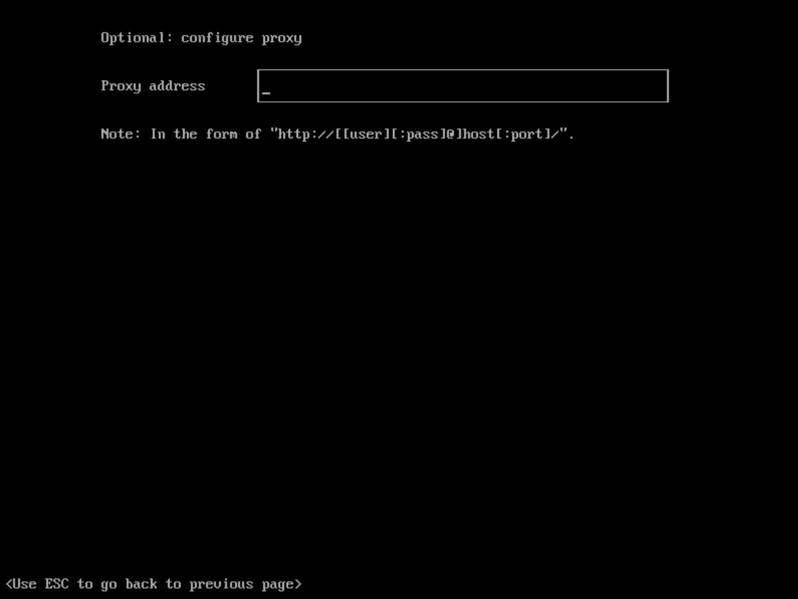
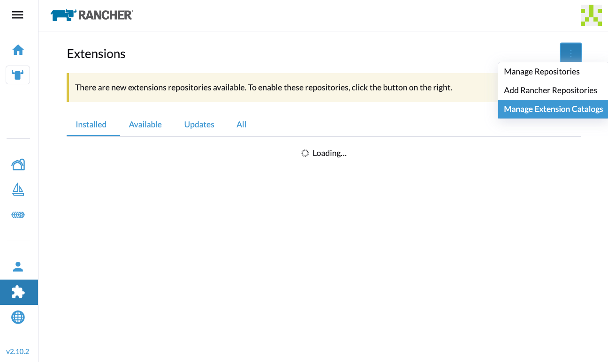
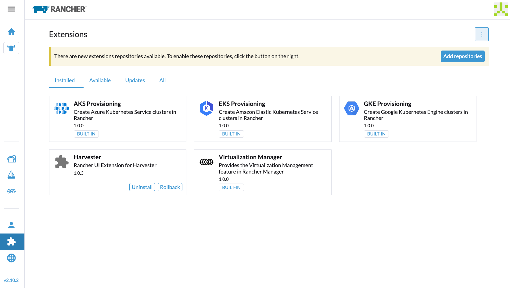
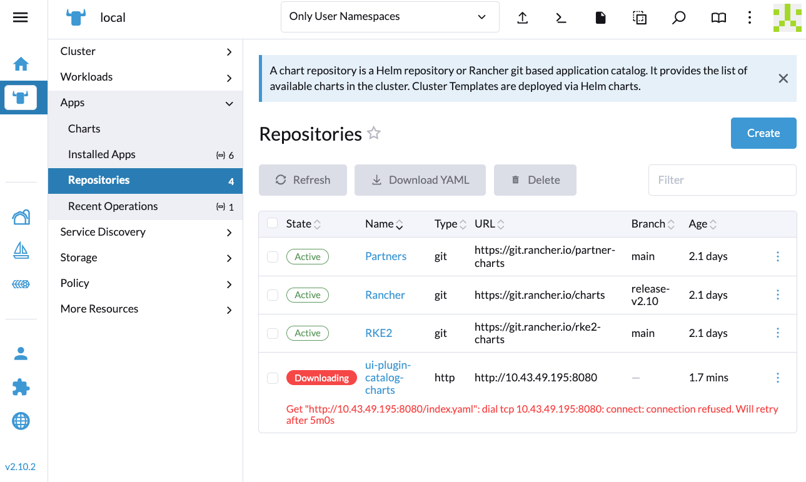

|
Dieses Dokument wurde mithilfe automatisierter maschineller Übersetzungstechnologie übersetzt. Wir bemühen uns um korrekte Übersetzungen, übernehmen jedoch keine Gewähr für die Vollständigkeit, Richtigkeit oder Zuverlässigkeit der übersetzten Inhalte. Im Falle von Abweichungen ist die englische Originalversion maßgebend und stellt den verbindlichen Text dar. |
Air-Gapped-Umgebung
Dieser Abschnitt beschreibt, wie man SUSE Virtualization in einer Air-Gapped-Umgebung verwendet. Einige Anwendungsfälle könnten sein, wo SUSE Virtualization offline, hinter einer Firewall oder hinter einem Proxy installiert wird.
Das ISO-Image enthält alle Pakete, um es in einer Air-Gapped-Umgebung funktionsfähig zu machen.
Arbeiten hinter einem HTTP-Proxy
In einigen Umgebungen erfordert die Verbindung zu externen Diensten von den Servern oder VMs einen HTTP(S)-Proxy.
Einen HTTP-Proxy während der Installation konfigurieren
Sie können den HTTP(S)-Proxy während der ISO-Installation wie im Bild unten gezeigt konfigurieren:

Einen HTTP-Proxy konfigurieren
Sie können den HTTP(S)-Proxy über die Benutzeroberfläche konfigurieren.
-
Gehen Sie zur Einstellungsseite der Benutzeroberfläche.
-
Suchen Sie die
http-proxy-Einstellung, klicken Sie auf ⋮ > Einstellung bearbeiten -
Geben Sie die Werte für
http-proxy,https-proxyundno-proxyein.

|
SUSE Virtualization fügt notwendige Adressen zu den vom Benutzer konfigurierten Wenn die Knoten im Cluster keinen Proxy verwenden, um miteinander zu kommunizieren, muss der CIDR nach der erfolgreichen Installation des ersten Knotens zu |
Gast-Cluster-Images
Alle notwendigen Images zur Installation und Ausführung von SUSE Virtualization sind bequem im ISO-Image enthalten, wodurch die Notwendigkeit entfällt, Images auf Bare-Metal bereitzustellen. Ein SUSE Virtualization Cluster verwaltet sie unabhängig und effektiv im Hintergrund.
Es ist jedoch wichtig zu verstehen, dass ein Gast-Kubernetes-Cluster (zum Beispiel ein SUSE® Rancher Prime: RKE2 Cluster), der vom Harvester Node Driver erstellt wurde, eine eigenständige Entität von einem SUSE Virtualization Cluster ist. Ein Gast-Cluster arbeitet innerhalb von VMs und erfordert das Abrufen von Images entweder aus dem Internet oder aus einem private Registry.
Wenn die Cloud Provider Option in einem Gast-Kubernetes-Cluster auf SUSE Virtualization konfiguriert ist, wird der Harvester Cloud Provider und der Container Storage Interface (CSI) Treiber bereitgestellt.

Daher empfehlen wir, jede RKE2-Version in Ihrer Air-Gapped-Umgebung zu überwachen und die erforderlichen Images in Ihre private Registry zu ziehen. Bitte beziehen Sie sich auf die Support Matrix für die beste Unterstützung der Harvester Cloud Provider und CSI Treiberfähigkeiten.
Integrieren Sie mit einem externen Rancher
Rancher bestimmt das rancher-agent Image, das verwendet werden soll, wann immer ein SUSE Virtualization Cluster importiert wird. Wenn das Image nicht im SUSE Virtualization ISO enthalten ist, muss es aus dem Internet abgerufen und auf jedem Knoten geladen oder in die Registry des SUSE Virtualization Clusters hochgeladen werden.
# Run the following commands on a computer that can access both the internet and the {harvester-product-name} cluster.
docker pull rancher/rancher-agent:<version>
docker save rancher/rancher-agent:<version> -o rancher-agent-<version>.tar
# Copy the image TAR file to the air-gapped environment.
scp rancher-agent-<version>.tar rancher@<harvester-node-ip>:/tmp
# Use SSH to connect to the {harvester-product-name} node, and then load the image.
ssh rancher@<harvester-node-ip>
sudo -i
docker load -i /tmp/rancher-agent-<version>.tarHarvester UI-Erweiterung mit Rancher Integration
Die Harvester UI-Erweiterung ist erforderlich, um auf die SUSE Virtualization UI in Rancher v2.10.x und späteren Versionen zuzugreifen. Das Installieren der Erweiterung über das Netzwerk ist jedoch in Air-Gapped-Umgebungen nicht möglich, daher müssen Sie den folgenden Workaround durchführen:
-
Ziehen Sie das Image rancher/ui-plugin-catalog mit dem neuesten Tag.
-
Gehen Sie in der Rancher UI zu Erweiterungen und wählen Sie dann ⋮ → Erweiterungskatalog verwalten aus.

-
Geben Sie die erforderlichen Informationen an.

-
Katalog-Image-Referenz: Geben Sie die URL der privaten Registry und das Image-Repository an.
-
Bild-Pull-Geheimnisse: Geben Sie das Geheimnis an, das zum Zugriff auf die Registry verwendet wird, wenn ein Benutzername und ein Passwort erforderlich sind. Sie müssen dieses Geheimnis im
cattle-ui-plugin-systemNamespace erstellen. Verwenden Sie entwederkubernetes.io/dockercfgoderkubernetes.io/dockerconfigjsonals Wert fürtype.Beispiel:
apiVersion: v1 kind: Secret metadata: name: my-registry-secret-rancher namespace: cattle-ui-plugin-system type: kubernetes.io/dockerconfigjson data: .dockerconfigjson: {base64 encoded data}
-
-
Klicken Sie auf Laden, und lassen Sie dann etwas Zeit, damit die Erweiterung geladen werden kann.

-
Suchen Sie im Tab Verfügbar die Erweiterung mit dem Namen Harvester, und klicken Sie dann auf Installieren.

-
Wählen Sie die Version aus, die mit dem SUSE Virtualization Cluster übereinstimmt, und klicken Sie dann auf Installieren.
Für weitere Informationen siehe die Harvester UI-Erweiterung Support-Matrix.


-
Gehen Sie zu Virtualisierungsmanagement → Harvester Cluster.
Sie können jetzt SUSE Virtualization Cluster importieren und auf die SUSE Virtualization UI zugreifen.

Zeitanforderungen
Ein zuverlässiger Network Time Protocol (NTP) Server ist entscheidend für die Aufrechterhaltung der korrekten Systemzeit über alle Knoten in einem Kubernetes-Cluster, insbesondere beim Ausführen von SUSE Virtualization. Kubernetes ist auf etcd angewiesen, einen verteilten Schlüssel-Wert-Speicher, der eine präzise Zeitsynchronisation erfordert, um Datenkonsistenz sicherzustellen und Probleme mit der Wahl des Leaders, der Protokollreplikation und der Clusterstabilität zu vermeiden.
In einer Air-Gapped-Umgebung, in der externe Zeitquellen nicht verfügbar sind, wird die Aufrechterhaltung einer genauen und synchronisierten Zeit noch wichtiger. Ohne ordnungsgemäße Zeitsynchronisierung können Clusterknoten Authentifizierungsfehler, Planungsprobleme oder sogar Datenkorruption erfahren. Um diese Risiken zu mindern, sollten Organisationen einen robusten, internen NTP-Server bereitstellen, der die Zeit über alle Systeme im Netzwerk synchronisiert.
Die Gewährleistung einer genauen und konsistenten Zeit im Cluster ist entscheidend für Zuverlässigkeit, Sicherheit und die allgemeine Systemintegrität.
Fehlerbehebung
UI-Erweiterungen erscheinen nicht
Wenn der Erweiterungen-Bildschirm leer ist, gehen Sie zu Repositories (⋮ → Repositories verwalten) und klicken Sie dann auf Aktualisieren.




Installation fehlgeschlagen
Wenn Sie während der Installation auf einen Fehler stoßen, überprüfen Sie die uiplugins Ressource.

Beispiel:
bash-4.4# k get uiplugins -A
NAMESPACE NAME PLUGIN NAME VERSION STATE
cattle-ui-plugin-system harvester harvester 1.0.3 pending
bash-4.4# k get uiplugins harvester --namespace cattle-ui-plugin-system -o yaml
apiVersion: catalog.cattle.io/v1
kind: UIPlugin
metadata:
# skip
name: harvester
namespace: cattle-ui-plugin-system
spec:
plugin:
endpoint: http://ui-plugin-catalog-svc.cattle-ui-plugin-system:8080/plugin/harvester-1.0.3Stellen Sie sicher, dass svc.namespace von Rancher aus zugänglich ist. Wenn dieser Endpunkt nicht zugänglich ist, können Sie direkt eine Cluster-IP wie 10.43.33.58:8080/plugin/harvester-1.0.3 verwenden.